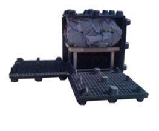

Our Initiatives
The environmental, sustainability and innovation initiatives supported by Green2Gold, past, present and future.
Flagship initiatives
Environmental Education Group (EEG)
Founded in 1972 by Prof. Alan Tratner with supporters including Nobel prize winner Dennis Gabor, and chaired today by Lielle Arad. EEG sets out to harmonize the environments on all levels, with workshops and harmony programs, the TikaKnows children's curriculum, the Committee of Responsibility, a research library and nonprofit businesses.
Visit the EEG websiteHarm-Free Emporium
Green2Gold's Harm-Free Emporium initiative. Visit its dedicated website for its mission, activities and resources. The 2024–2025 Harm-Free Emporium update is also available in our media library.
Regeneration, resilience & the green economy
Regen Global Alliance
Regeneration Global and its magazine, connecting regenerative projects, partners and solutions worldwide.
Learn more → MediaRegenerative Media
Regenerative Media TV (RMTV): solution-based broadcasting on regenerative design and sustainability.
Learn more → Disaster recovery
Disaster recoveryBuild Back Green Global™
Experts & technologies for climate resilience and regenerative disaster recovery.
Learn more → ManufacturingGreenTech Micro-Manufacturing Hub
Part of Green2Gold's Green Entrepreneurial Innovation Hub.
Learn more → ConsultingGlobal Transition to Sustainability Center
Making the transition to sustainability and entering the inclusive global green economy, for every kind of entity & institution.
Learn more →
ShelterLifecube Emergency Shelter
Rugged, reliable instant shelter. Started as an idea on a napkin…
Learn more →Sustainable technology, community development & regenerative projects
 2022
2022EarthCoin & Capstone
The genesis EARTHCOIN NFT, released with YoshiDrops.com in support of Earth Day 2022.
Learn more →Plastic-Free Packaging Alliance
A non-profit organization helping major companies transition from harmful oil-based plastics to environmentally friendly bio-plastics. To date the organization has prevented millions of tons of plastic from entering landfills and oceans.
Watch Alan discuss it →California Space Enterprise Center (CSEC)
A proposed center to facilitate, boost and encourage private space enterprise in the Lompoc and Vandenberg Air Force Base area, chaired by Alan Tratner.
Read the SBA's support letter →Committee of Responsibility (COR)
A new paradigm in bringing responsible, solid, unbiased, neutral, and deeply thought out decisions for nonprofits and businesses.
Learn more →Green2Gold Community Incubators
How to bring a Green2Gold incubator to your community for sustainable, inclusive economic development.
Learn more →Green2Gold White Paper
Green2Gold's white paper for governments and institutions.
Read the white paper (PDF)